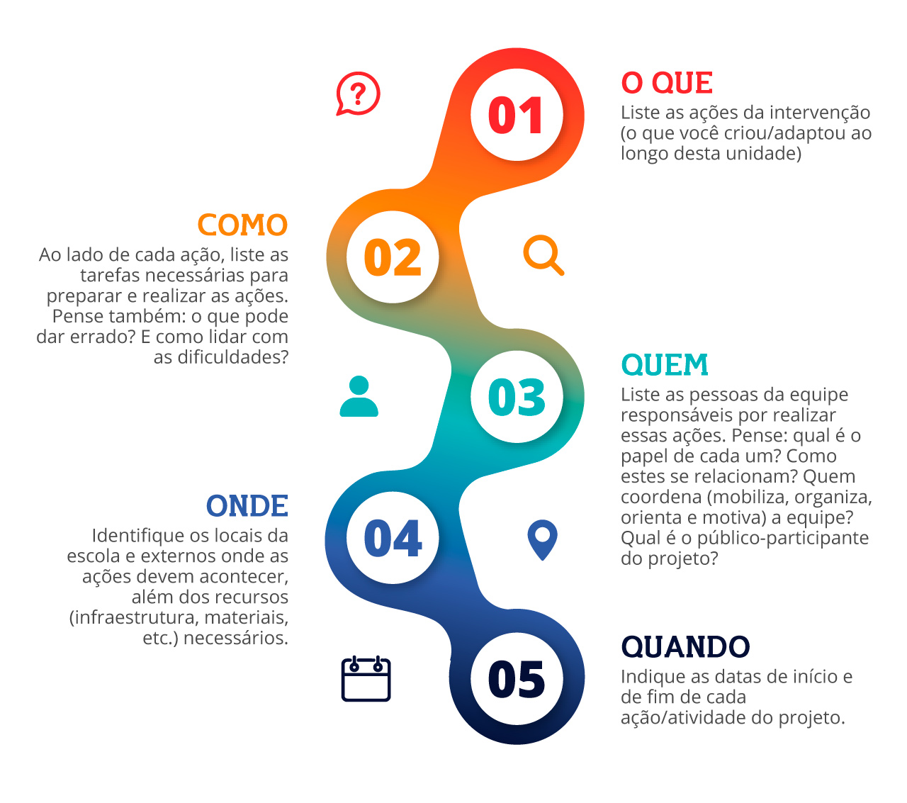

Agora que você já criou, escolheu e adaptou ações de Educação para a Carreira, além de entender como articular essas ações, é momento de dar forma ao seu projeto.
O projeto é um plano de implantação das ações criadas. Por isso, deve ser algo sintético, bem estruturado, objetivo e totalmente orientado a resolver a situação-problema e realizar os objetivos visados. Então, recomendamos o seguinte modelo de projeto.
Projeto de intervenção para orientação profissional

Acesse aqui a versão em PDF do modelo de Projeto de intervenção para orientação profissional.
Figura 01 - Fonte: Imagem produzida pela equipe gráfica do projeto
A seguir, listamos dicas que ajudarão você a usar este modelo e escrever o seu projeto.
Note que os tópicos do planejamento estão relacionados entre si. Por exemplo, para definir QUANDO (cronograma), você precisa ter definido O QUE (ações), COMO (passo a passo) e QUEM (equipe). Considera-se ainda aspectos que extrapolam os limites do projeto em si, como o calendário escolar e a disponibilidade de convidados. Somente considerando tudo isso é possível estimar o tempo necessário para realizar cada tarefa e definir as datas.
Pode haver tarefas realizadas simultaneamente. Então, o melhor é montar o cronograma na forma de tabela ou planilha.
Por exemplo, se será feita uma rodada de conversa com profissionais, muitos preparativos precisam ser feitos: a seleção dos convidados; o convite e agendamento dos encontros; a elaboração do roteiro do encontro; a escolha do local e preparação da infraestrutura do encontro e do material de divulgação; a divulgação... e por aí vai!
Esteja preparado(a) para acolher surpresas positivas! Possibilidades interessantes de serem incorporadas sempre emergem ao longo de uma intervenção. Então, Então, lembre-se de que o plano funciona como um mapa, um guia, e não como lei. É importante ter flexibilidade na condução da intervenção.
Mas cuidado para não perder o foco! Mesmo passando por ajustes, a intervenção deve ser capaz de contribuir para a resolução da situação-problema enfrentada, a ajudar os alunos e alunas nos propósito da Educação para a Carreira e da Educação Profissional.